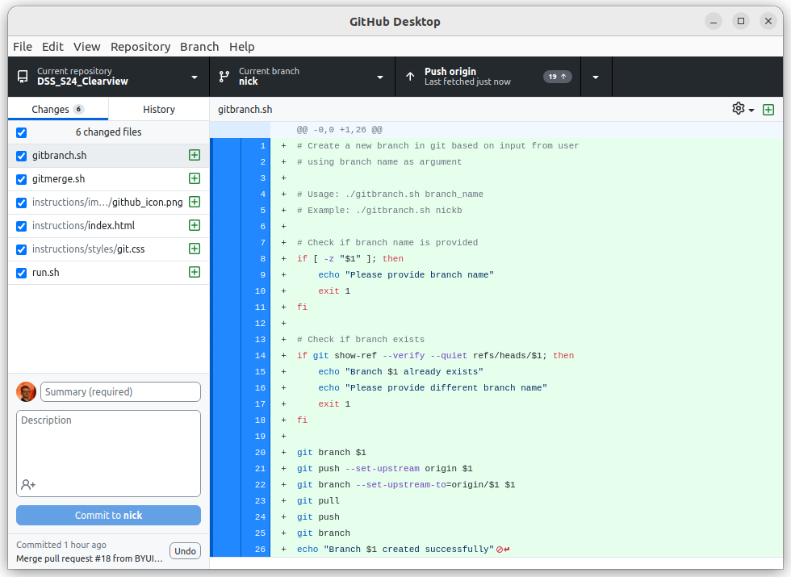
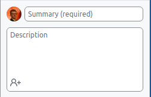
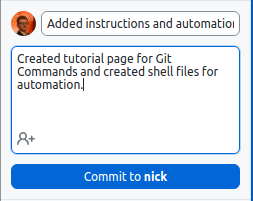
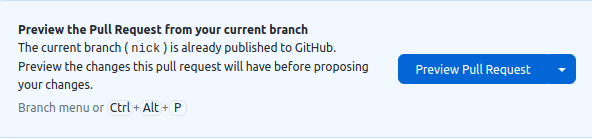
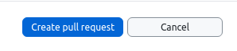
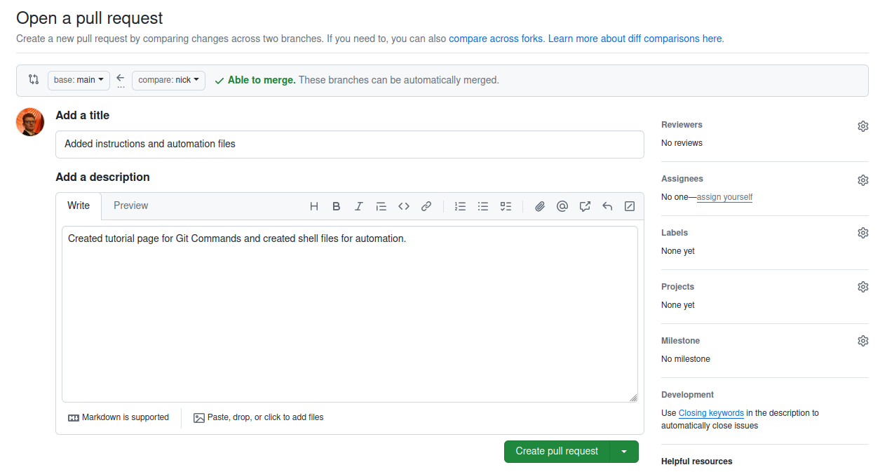
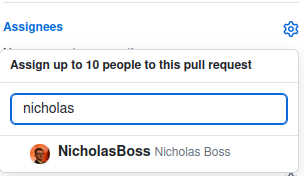
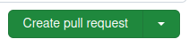

Git Command Help Page
Git Merge
-
To run git merge, run the following command:
./gitmerge.sh {branchname}
Create a Branch
-
To create a new branch, run the following command:
./gitbranch.sh {branchname}
Creating a Pull Request
-
To Create a Pull Request, Open GitHub Desktop
 -
Write a Summary and optionally write a Description.
 -
Click on the Commit to {branchname} button.
 -
Go to the Source Control section of VS Code.
-
Click on the Sync Changes button.

-
Go back to GitHub Desktop and click on the Preview Pull Request button.
 -
Click on the Create Pull Request button.
 -
GitHub.com will open to your request.
 -
Click on the gear in the Add Assignees section and add Nicholas Boss.
 -
Click on the Create Pull Request button.
